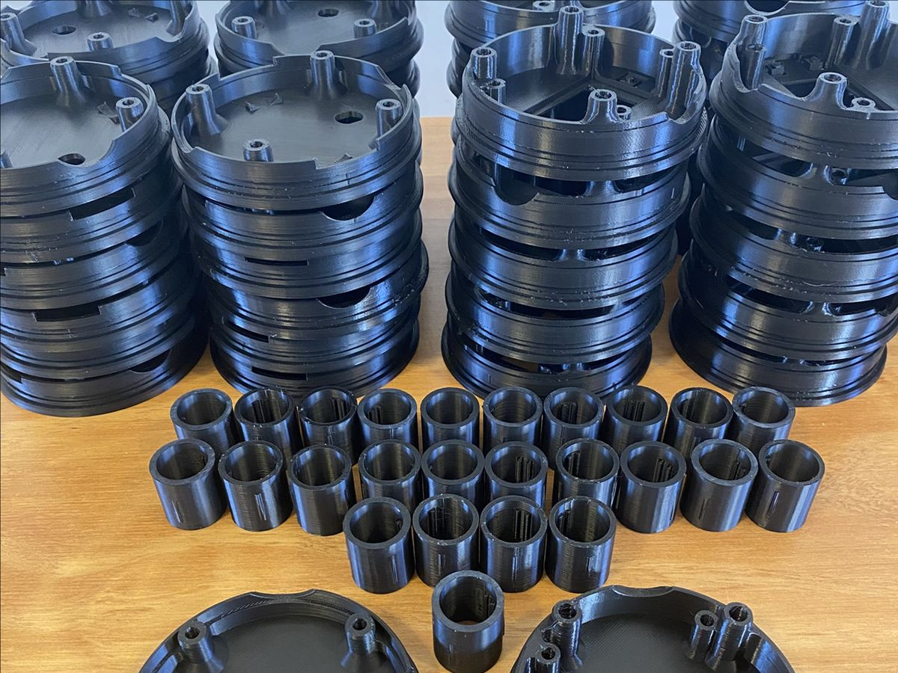

Producción en serie · ABS
Carcasas en serie para instrumentos de medición
3 díaspor tanda, con varias impresoras en paralelo
Para un fabricante de instrumentos de medición industrial. Hoy es un pedido que se repite.